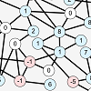

EN-US
Bem-Vindo ao Introscópio
João Antonio de F. P. e Ferreira, 27 anos, é um programador independente cujo trabalho abrange desde software-art e creative coding até desenvolvimento de jogos e utilidades para desktop. Estes são anguns de seus trabalhos.
Software-Arte
Programação Criativa
Desenvolvimento de Jogos
Utilidades

Quebra-Cabeças & Matemática